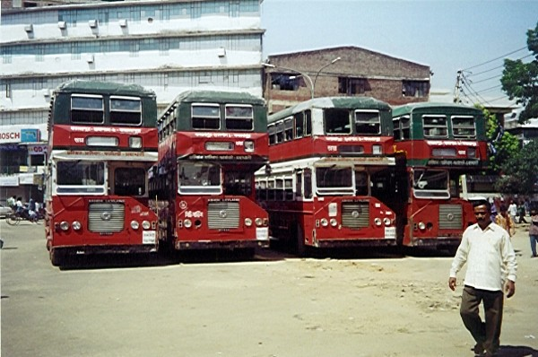
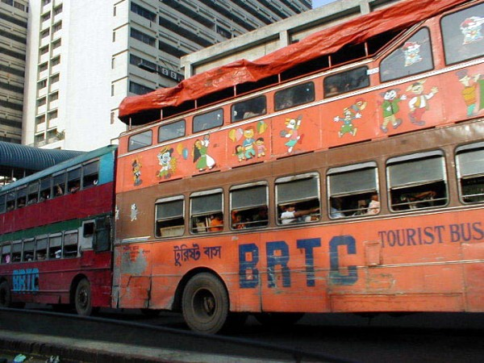
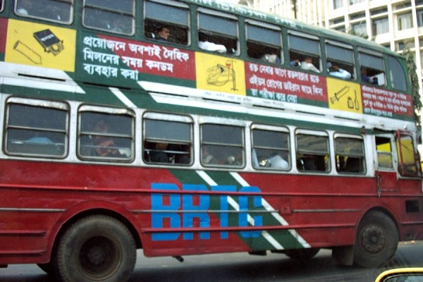
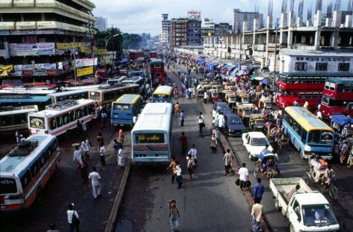
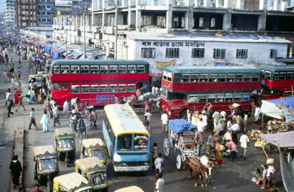
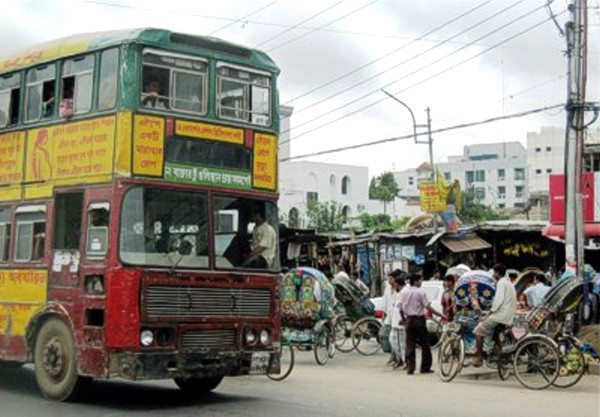
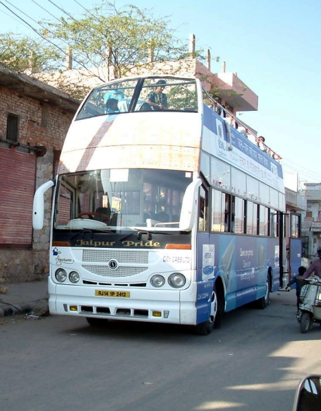

|
Ashok Leyland "Titan" ALPD1/1 印度神話
 人口為一億二千多萬，人口密度位於位居世界前茅，有「水中之國」之稱的孟加拉，當地的巴士服務由BRTC(Bangladesh Road Transport Corporation)提供。BRTC的車隊由867輛巴士及貨車組成，其中697輛為巴士，Ashok雙層巴士就佔248輛。 BRTC的Ashok雙層巴士分為兩款，一款為半艙式設計，另一款為密封式車頭設計。兩者同樣使用車尾開放式平台。BRTC大部份的車輛，由於保養的素質問題，車況都不甚良好，每天很多路線的班次會由於車輛故障，而無法開出，經常出現嚴重脫班問題，曾引起孟加拉民眾不滿，上街示威。現時248輛Ashok雙層巴士當中，約有66輛已退離載客行列。
 BRTC同時擁有開頂版本的Ashok雙層巴士，作為遊客觀光路線之用。

 從圖中可見孟加拉首都達卡(Dhaka)的街頭，車水馬龍，但交通情況頗為惡劣，雙層巴士有鶴立雞群的感覺。

 BRTC車隊內較新款的Ashok雙層巴士，下層車頭為密封式的設計。
 最新的Ashok雙層觀光巴士。 |
以上圖片鳴謝眾海外好友提供﹕Koraso、Gilbertodela